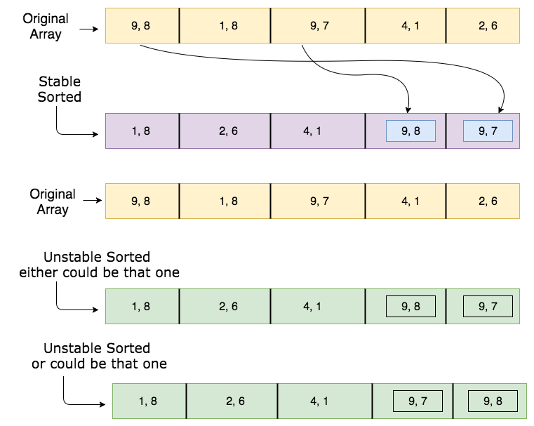

What is stability in sorting algorithms and why is it important?
I'm very curious, why stability is or is not important in sorting algorithms?
Answer
A sorting algorithm is said to be stable if two objects with equal keys appear in the same order in sorted output as they appear in the input array to be sorted. Some sorting algorithms are stable by nature like Insertion sort, Merge Sort, Bubble Sort, etc. And some sorting algorithms are not, like Heap Sort, Quick Sort, etc.
Background : a "stable" sorting algorithm keeps the items with the same sorting key in order. Suppose we have a list of 5-letter words:
peach straw apple spork
If we sort the list by just the first letter of each word then a stable-sort would produce:
apple peach straw spork
In an unstable sort algorithm, straw or spork may be interchanged, but
in a stable one, they stay in the same relative positions (that is, since
straw appears before spork in the input, it also appears before spork in
the output).
We could sort the list of words using this algorithm: stable sorting by column 5, then 4, then 3, then 2, then 1. In the end, it will be correctly sorted. Convince yourself of that. (by the way, that algorithm is called radix sort)
Now to answer your question, suppose we have a list of first and last names. We are asked to sort "by last name, then by first". We could first sort (stable or unstable) by the first name, then stable sort by the last name. After these sorts, the list is primarily sorted by the last name. However, where last names are the same, the first names are sorted.
You can't stack unstable sorts in the same fashion.
Suggest
A stable sorting algorithm is the one that sorts the identical elements in their same order as they appear in the input, whilst unstable sorting may not satisfy the case. - I thank my algorithm lecturer Didem Gozupek to have provided insight into algorithms.
I again needed to edit the question due to some feedback that some people don't get the logic of the presentation. It illustrates sorting w.r.t. first elements. On the other hand, you can either consider the illustration consisting of key-value pairs.
Stable Sorting Algorithms:
- Insertion Sort
- Merge Sort
- Bubble Sort
- Tim Sort
- Counting Sort
- Block Sort
- Quadsort
- Library Sort
- Cocktail shaker Sort
- Gnome Sort
- Odd–even Sort
Unstable Sorting Algorithms:
- Heap sort
- Selection sort
- Shell sort
- Quick sort
- Introsort (subject to Quicksort)
- Tree sort
- Cycle sort
- Smoothsort
- Tournament sort(subject to Hesapsort)
